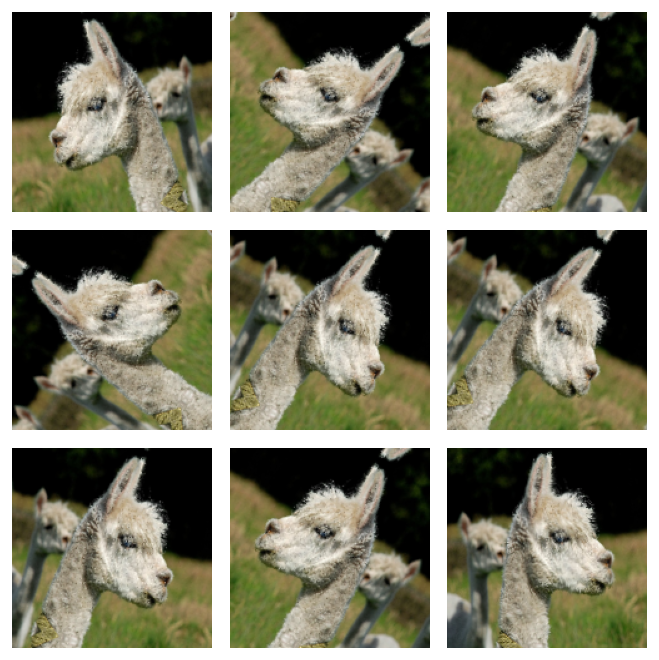
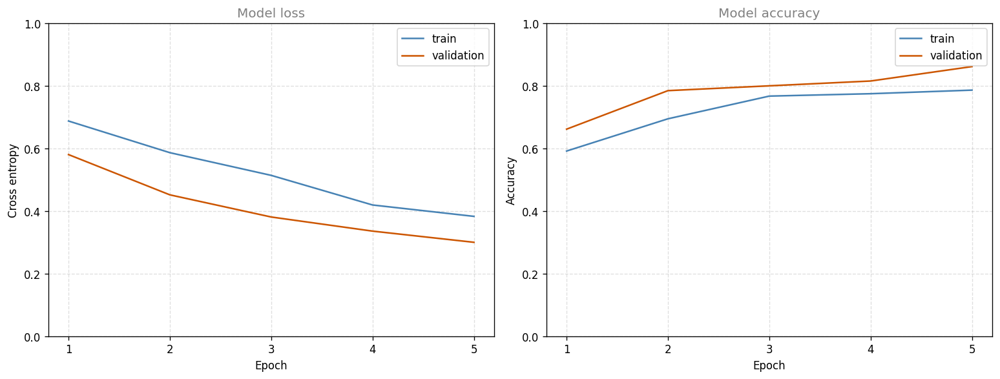
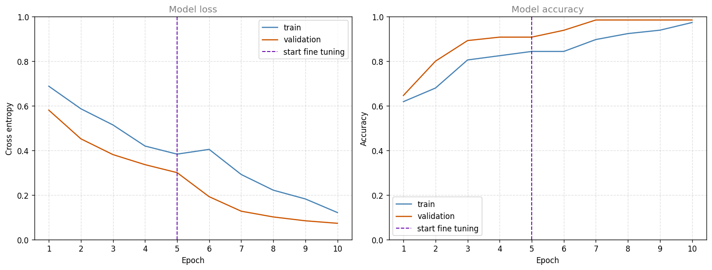

Turn an ImageNet MobileNetV2 into an alpaca detector by training one new neuron on frozen features, then fine tuning the last 34 layers of the network.
Published
Aug 17, 2026
ImportantSix changes from the original notebook
The assignment was written against TensorFlow 2.3 with Keras 2, and this page runs on TensorFlow 2.21 with Keras 3. Six things changed (updated 2026-08-31).
Global seeding was added with tf.keras.utils.set_random_seed(1), so the run reproduces on every render.
Several Keras APIs were migrated, including the preprocessing layer imports and the way the base model’s layers are looked up.
The bundled MobileNetV2 weights and class JSON were replaced by Keras downloads, using weights='imagenet', which caches under ~/.keras/models.
Fine-tuning runs five epochs rather than six. The notebook’s loop ran an extra epoch by accident; five is what its text describes.
The accuracy metric was corrected. The head emits a logit, so the string 'accuracy' would have thresholded at 0.5 on a logit, which is a probability of about 0.62. It is now BinaryAccuracy(threshold=0.0).
The validation results changed from the notebook’s 0.7385 before fine-tuning and 0.9692 after, to 0.9077 and 0.9846 here.
The alpaca dataset, the two-stage transfer-learning recipe, the augmentation layers and the learning rates are the assignment’s own.
Practical Advice for Using ConvNets argued that downloading weights someone else trained beats starting from random initialization, and MobileNet and EfficientNet took apart the architecture this lab borrows. Here the two meet in about forty lines of Keras.
MobileNetV2 is the network that page calls MobileNet v2, the 2018 generation that adds an expansion layer and a residual connection to the original design and repeats the resulting bottleneck block 17 times. The 2 names the architecture, not a version of this lab, and it matters here because v1 and v2 are different networks with different weights.
The task is a binary classifier that answers one question about a photograph, whether or not it contains an alpaca. The dataset holds 327 images, of which 262 are used for training. That is nowhere near enough to fit a 2.3 million parameter network from scratch. MobileNetV2 has already been trained on the ILSVRC-2012 subset of ImageNet, about 1.28 million photographs across 1000 classes, so the expensive part of learning what images look like is already paid for. (Full ImageNet holds around 14 million images, but the weights Keras ships are the 1000-class ILSVRC ones.)
The work happens in two stages, and the difference between them is the point of the lab.
Feature extraction. Every borrowed layer is frozen and a single new output neuron is trained on top of them. 1281 trainable parameters out of 2.3 million.
Fine-tuning. The last 34 of MobileNetV2’s 154 layers are unfrozen and training continues with a learning rate ten times smaller.
Along the way you will build datasets straight from a directory of image files, augment them with random flips and rotations, and see why a pretrained network that has never heard of alpacas is still the right thing to start from.
Packages
Three of these imports do the real work. image_dataset_from_directory reads image files off disk and hands back a batched dataset, MobileNetV2 is the pretrained network, and mobilenet_v2.preprocess_input is the exact input scaling those pretrained weights expect.
Seeding covers the Python, NumPy, and TensorFlow generators in one call, which fixes the weight initialization, the train and validation shuffle, and the random augmentations, so the numbers on this page are stable across renders.
import osos.environ["TF_CPP_MIN_LOG_LEVEL"] ="3"# quiet TensorFlow's startup loggingfrom collections import Counterimport numpy as npimport pandas as pdimport matplotlib.pyplot as pltimport tensorflow as tffrom tensorflow.keras.utils import image_dataset_from_directoryfrom tensorflow.keras.layers import (RandomFlip, RandomRotation, Dense, Dropout, GlobalAveragePooling2D)tf.keras.utils.set_random_seed(1) # Python, NumPy and TensorFlow generatorsprint("TensorFlow", tf.__version__)
TensorFlow 2.21.0
NoteLab Files Download
This lab needs the alpaca photographs and nothing else. The MobileNetV2 weights are fetched by Keras the first time the model is built and cached under ~/.keras/models, so there is no weight file to hunt down.
The 327 photographs run to 117 MB at their original resolution, which is too large to host with the site, so they live on Google Drive as one folder per class.
Download both folders and arrange them next to your notebook as dataset/alpaca/ and dataset/not alpaca/, keeping the folder names exactly as they are. Those names are the class labels, and the space in not alpaca is part of one.
Dataset From a Directory
There is no CSV file and no HDF5 archive here. The labels are the folder names, one folder per class, and image_dataset_from_directory is the function that turns that layout into something trainable. It walks the directory, treats each subfolder as a class, decodes every image, resizes it to image_size, and groups the results into batches.
Four of its arguments deserve attention.
image_size=(160, 160) is not a free choice. MobileNetV2 ships pretrained weights for a handful of input sizes, and 160 by 160 is one of them. Note that this resize does not crop, it squeezes, so the typical 1024 by 768 photograph in this dataset is compressed horizontally on its way into a square.
validation_split=0.2 with subset='training' and subset='validation' asks for the same split twice, once from each end. The function shuffles the file list, then hands back the first 80 percent or the last 20 percent depending on the subset.
seed=42 appears in both calls, and it has to be the same number in both. The split is computed from the shuffled file order, so two different seeds would produce two different orders, and the same photograph could easily land in both the training set and the validation set. The result would be a validation accuracy that flatters the model.
Found 327 files belonging to 2 classes.
Using 262 files for training.
Found 327 files belonging to 2 classes.
Using 65 files for validation.
class names: ['alpaca', 'not alpaca']
training batches: 9
validation batches: 3
The class names come back in alphabetical order, so alpaca is label 0 and not alpaca is label 1. Nine batches of 32 covers the 262 training images, with the last batch short.
class_names is read straight after the dataset is created, and that ordering matters. Several of the transformations applied later return a plain dataset with no class_names attribute, so a copy has to be taken while it is still available.
Looking at a batch is worth doing before anything else. One for loop over take(1) pulls a single batch of 32 images and 32 labels, and the first nine of them go into a grid.
plt.figure(figsize=(5.6, 5.6))for images, labels in train_dataset.take(1):for i inrange(9): plt.subplot(3, 3, i +1) plt.imshow(images[i].numpy().astype("uint8")) # pixels arrive as floats plt.title(class_names[labels[i]], fontsize=11, color='gray') plt.axis("off")plt.tight_layout()plt.show()
Dataset From a Directory.
The .astype("uint8") is not cosmetic. image_dataset_from_directory returns float32 pixels in the range 0 to 255 rather than 0 to 1, and imshow interprets floats as if they were already scaled to 0 to 1, so without the cast every image would be a white rectangle. That 0 to 255 range comes back later, because the pretrained network expects to do its own scaling.
Notice what the negative class actually contains. It is not random photographs, it is other animals, several of them long necked and standing in grass. Giraffes, emus, and ostriches make a far harder negative class than street scenes would, because separating them from an alpaca takes more than noticing that the picture contains an animal outdoors.
print("image batch shape:", images.shape, images.dtype)print("label batch shape:", labels.shape, labels.dtype)print("pixel range: %.1f to %.1f"% (float(tf.reduce_min(images)),float(tf.reduce_max(images))))print("labels in batch: ", np.bincount(labels.numpy(), minlength=2),"(alpaca, not alpaca)")
image batch shape: (32, 160, 160, 3) <dtype: 'float32'>
label batch shape: (32,) <dtype: 'int32'>
pixel range: 0.0 to 255.0
labels in batch: [19 13] (alpaca, not alpaca)
NoteMislabeled Images
The original dataset has a few mislabeled images in it, and they were left in place. A ceiling slightly below 100 percent accuracy is therefore expected, and chasing the last few percent on this dataset means fitting somebody else’s mistakes.
One more line prepares the training set for speed. Reading and decoding JPEG files is slow compared with the arithmetic of a forward pass, so without help the CPU would sit idle waiting for disk. prefetch overlaps the two, preparing the next batch while the current one is being trained on. Passing AUTOTUNE as the buffer size lets TensorFlow pick how many batches to keep ready, by timing each stage of the pipeline at runtime and adjusting.
1. Both calls to image_dataset_from_directory pass seed=42. What goes wrong if the second call uses a different seed?
TipAnswer
The split is taken from a shuffled file list, so the seed determines which files land in the first 80 percent and which land in the last 20 percent. With two different seeds, the two calls shuffle differently, and a file that was in the training 80 percent of the first order can easily be in the validation 20 percent of the second. The two sets would overlap, and the validation accuracy would then be measuring performance on images the model has already trained on.
1. Why does the plotting code cast pixels with .astype("uint8") before calling imshow?
TipAnswer
Because the dataset yields float32 values between 0 and 255. Matplotlib treats a float image as already normalized to the range 0 to 1 and clips anything above, so every pixel brighter than 1.0 would be drawn as pure white. Casting to uint8 tells imshow to use the 0 to 255 integer convention instead. Dividing by 255 would work equally well for display.
1. What does prefetch(buffer_size=AUTOTUNE) change about training, and what does it not change?
TipAnswer
It changes when work happens, not what work happens. The input pipeline prepares batch \(n+1\) while the model trains on batch \(n\), so decoding and resizing overlap with the forward and backward passes instead of blocking them. AUTOTUNE lets TensorFlow choose the buffer size by measuring the time spent in each stage. Gradients, weights, and accuracy are all unaffected, and the streaming design also means the dataset never has to fit in memory.
Data Augmentation
There are 262 training images. Every one of them is a fixed arrangement of pixels, and a network with millions of parameters will happily memorize all of them. Data augmentation attacks that by manufacturing variety, showing the model a flipped or slightly turned version of a photograph instead of the original, so that no exact arrangement of pixels is ever seen twice.
Keras supplies augmentations as layers, and that is more than a stylistic detail. A layer becomes part of the model, so it is saved with the model and restored with it, and there is no separate preprocessing script to keep in sync. More importantly, augmentation layers are active only in training mode. During fit they randomize, and when the model later predicts they pass their input through untouched. Randomly rotating an image at prediction time would only add noise to the answer.
Two layers are enough here. RandomFlip('horizontal') mirrors the image left to right about half the time, which is safe because an alpaca facing left is still an alpaca. RandomRotation(0.2) turns it by a random fraction of a full circle, up to 0.2 of a turn in either direction, which is 72 degrees each way.
def data_augmenter():""" Create a Sequential model composed of 2 augmentation layers. Returns: tf.keras.Sequential """ data_augmentation = tf.keras.Sequential() data_augmentation.add(RandomFlip('horizontal')) data_augmentation.add(RandomRotation(0.2))return data_augmentationdata_augmentation = data_augmenter()for layer in data_augmentation.layers:print(f"{type(layer).__name__:<16}{layer.name}")
Running one image through it nine times gives nine different images. tf.expand_dims(first_image, 0) is there because the layers expect a batch, so a single image has to be given a batch dimension of one, and the display then indexes back into that batch with [0].
Calling the augmenter directly like this puts it in training mode, which is why the nine outputs differ. Inside a model being used for prediction the same layers would return the image unchanged.
for image, _ in train_dataset.take(1): plt.figure(figsize=(5.6, 5.6)) first_image = image[0]for i inrange(9): plt.subplot(3, 3, i +1) augmented_image = data_augmentation(tf.expand_dims(first_image, 0)) plt.imshow(augmented_image[0] /255) plt.axis('off')plt.tight_layout()plt.show()

Data Augmentation.
From one animal to nine variations of that animal, in two lines of configuration. Look at the corners of the rotated ones. Turning a square image leaves triangular gaps, and Keras fills them by reflecting the pixels just inside the edge rather than painting them a flat color, so a dark background reflects into a dark wedge and grass reflects into more grass. The statistics of the image stay roughly intact, which a block of pure black would not manage.
There is a limit to what this buys. Every variation still comes from the same 262 photographs, so augmentation stretches the data rather than adding to it. It cannot invent an alpaca in a setting none of the originals contain.
The last piece of preparation is the scaling the pretrained weights expect. MobileNetV2 was trained on inputs mapped to the range \(-1\) to \(1\), not 0 to 1, and preprocess_input performs exactly that mapping, which for this network is \(x / 127.5 - 1\). Reusing the function rather than writing the arithmetic is the safer habit, since a different pretrained network may well have used a different convention, and every filter in the borrowed layers was tuned against whatever scaling its training used.
1. Why are the augmentations built as layers inside the model rather than applied to the dataset before training?
TipAnswer
Because a layer travels with the model. It is saved and restored along with the weights, so there is no separate preprocessing step to reproduce later, and the augmentation cannot drift out of step with the network it was designed for. Keras also gives these layers the right behavior automatically, since they randomize during fit and pass their input straight through during predict and evaluate.
1. RandomRotation(0.2) is described as rotating by up to 72 degrees. Where does that number come from, and why is a large rotation reasonable here but a vertical flip is not offered?
TipAnswer
The factor is measured in full turns, so 0.2 means 0.2 of 360 degrees, which is 72 degrees, applied in either direction. A photograph of an alpaca tilted 72 degrees still shows an alpaca, so the label survives the transformation. A vertical flip would produce an upside down animal, which no photograph in the dataset resembles, so it would teach the network to recognize inputs it will never be asked about. The test for any augmentation is whether the label still holds after it.
1. Why call preprocess_input instead of dividing the pixels by 255?
TipAnswer
Because the borrowed weights were fitted against a specific input scaling. MobileNetV2 was trained on inputs in the range \(-1\) to \(1\), so feeding it values in 0 to 1 would shift and shrink everything the first convolution sees, and the features those filters produce would no longer be the features they were trained to produce. Calling the function that ships with the model means the scaling is correct without having to remember which network used which convention.
What the Pretrained Model Already Knows
Before deleting anything, it is worth loading MobileNetV2 exactly as it was trained, classifier and all, and seeing what it says about these photographs. include_top=True keeps the 1000-way ImageNet output layer, and weights='imagenet' downloads the trained weights and caches them. With the top attached, Keras applies a softmax by default, so those 1000 numbers are class probabilities rather than raw scores.
A summary() of this model runs to several hundred lines, which is not a useful thing to read. Counting layers by type says more in nine lines, and every count in it can be traced back to the architecture.
for layer_type, count in Counter(type(l).__name__for l in base_model.layers).most_common():print(f"{count:>4}{layer_type}")print()print("last two layers:", [l.name for l in base_model.layers[-2:]])
Those numbers are the architecture, stated as a census.
The 17 DepthwiseConv2D layers are 17 bottleneck blocks, one depthwise convolution each, which is the depthwise separable convolution that makes the network cheap. The 35 ordinary convolutions account for the rest of that structure, namely one stem convolution, a \(1 \times 1\) projection in each of the 17 blocks, a \(1 \times 1\) expansion in 16 of them, and one final \(1 \times 1\) convolution that widens the volume to 1280 channels. The 10 Add layers are the residual connections, present only in the blocks where the shape allows the input to be added back, exactly as in the convolutional block argument from the previous lab. Every convolution is followed by BatchNorm, which is why there are 52 of those.
The two layers at the end are the top, a global average pooling followed by a dense layer named predictions. Together they turn features into the 1000 ImageNet class scores, and they hold 1,281,000 of the model’s parameters, over a third of the total.
Now push a real batch through it. The images need the \(-1\) to \(1\) scaling first, and decode_predictions turns the 1000 raw scores for each image into the top few class names.
base_model.trainable =Falseimage_batch, label_batch =next(iter(train_dataset))pred = base_model(preprocess_input(tf.identity(image_batch)))print("prediction shape:", pred.shape, "(batch size, ImageNet classes)")print()decoded = tf.keras.applications.mobilenet_v2.decode_predictions(pred.numpy(), top=2)for i inrange(8): truth = class_names[label_batch[i]] guesses =" ".join(f"{name}{score:.0%}"for _, name, score in decoded[i])print(f"{truth:<12}{guesses}")
Some of those guesses are close and some are absurd, and none of them say alpaca. That is not a failure of the network. ImageNet’s 1000 classes simply do not include one, so the closest thing the classifier can reach for is llama, or a wild sheep, or whatever else the features happen to point at. The output layer can only ever name a class it was trained on.
The features underneath tell a different story. Guessing llama for an alpaca means the layers before the classifier have already measured wool, ears, a long neck, and a muzzle. That is the part worth keeping. Deleting the top and training a replacement is what the rest of this lab does.
Review Questions
1. The model outputs 1000 numbers per image. Why does that make the top layer useless here, while the layers below it stay valuable?
TipAnswer
The 1000 outputs are the 1000 ImageNet classes, and alpaca is not one of them, so no output of that layer can express the answer this task needs. The layers below the classifier do not name classes at all, they produce a 1280 number description of the image, built from edges, textures, and shapes learned across those 1.28 million photographs. Nothing about that description is specific to the 1000 labels, which is why it transfers. Only the last layer needs replacing.
1. The network calls one alpaca a llama with high confidence. Is that evidence against using it as a starting point?
TipAnswer
It is evidence in favor. A llama is the nearest available label to an alpaca, so producing it means the features underneath have correctly picked up the wool, ears, and neck of the animal. A network whose features were useless would have guessed something with no visual relationship to the photograph. The classifier is constrained to the vocabulary it was taught, and it is choosing the best word in that vocabulary.
1. Counting layers by type shows 17 depthwise convolutions but only 10 Add layers. Why are there fewer additions than blocks?
TipAnswer
Because a residual connection needs the input and the output of the block to have the same shape. A block that downsamples, or that changes the channel count, cannot simply add its input back, so no Add layer appears there. MobileNetV2 leaves those blocks without a shortcut rather than paying for a projection, so only the 10 blocks whose stride is 1 and whose channel count is unchanged carry one.
New Head on Frozen Features
Three steps turn the pretrained network into an alpaca detector.
Delete the top. Pass include_top=False, which drops the pooling and the 1000-way classifier and leaves the feature volume exposed.
Add a new head. Pool the feature volume to a vector, apply dropout, and finish with a single neuron, since a binary decision needs exactly one number.
Freeze the rest. Set base_model.trainable = False so gradient descent updates the new head and nothing else.
The Functional API is what assembles this, because the augmentation and the scaling sit in the middle of the path from input to output rather than being separate preprocessing steps.
Four lines in the function below need justifying.
x = data_augmentation(inputs) puts augmentation inside the model, so it runs during fit and is skipped during predict.
x = base_model(x, training=False) is the subtlest line on this page. Setting base_model.trainable = False stops the weights from being updated, but BatchNorm layers hold something that is not a weight, namely a running mean and variance of the activations they have seen. Those statistics are updated in training mode, not by gradient descent, so a frozen network would still quietly overwrite them with statistics from 262 alpaca photographs. Passing training=False puts the borrowed layers in inference mode, so they keep the ImageNet statistics they were shipped with. Without it, the features drift while their weights sit still.
GlobalAveragePooling2D() averages each of the 1280 channels over the 5 by 5 grid of positions, giving 1280 numbers. This is the same move that kept the classifier small in ResNet-50. Flattening the volume instead would produce \(5 \times 5 \times 1280 = 32{,}000\) inputs and a classifier 25 times larger, for a task with 262 training examples.
Dense(1) has no activation function, so it outputs a raw score rather than a probability. The sigmoid is folded into the loss instead, through BinaryCrossentropy(from_logits=True), which is more numerically stable than applying a sigmoid and then taking its logarithm.
def alpaca_model(image_shape=IMG_SIZE, data_augmentation=data_augmenter()):""" Define a tf.keras model for binary classification out of the MobileNetV2 model. Arguments: image_shape -- image width and height data_augmentation -- data augmentation function Returns: tf.keras.Model """ input_shape = image_shape + (3,) base_model = tf.keras.applications.MobileNetV2(input_shape=input_shape, include_top=False, # drop the classifier weights='imagenet')# Freeze the base model so that only the new head is trained base_model.trainable =False inputs = tf.keras.Input(shape=input_shape)# Augment first, then apply the scaling the pretrained weights expect x = data_augmentation(inputs) x = preprocess_input(x)# training=False keeps the borrowed BatchNorm layers on their ImageNet statistics x = base_model(x, training=False)# New binary classification head x = GlobalAveragePooling2D()(x) x = Dropout(0.2)(x)# One neuron, no activation: the sigmoid lives in the loss function outputs = Dense(1)(x) model = tf.keras.Model(inputs, outputs)return modelmodel2 = alpaca_model(IMG_SIZE, data_augmentation)
The whole model is six layers, because the borrowed network counts as one of them. Printing them with their output shapes and their trainable flags shows the structure and the freezing in one table.
print(f"{'#':<3}{'layer':<24}{'type':<24}{'output shape':>20} trainable")for i, layer inenumerate(model2.layers):print(f"{i:<3}{layer.name:<24}{type(layer).__name__:<24} "f"{str(layer.output.shape):>20}{layer.trainable}")trainable =sum(int(np.prod(w.shape)) for w in model2.trainable_weights)print()print(f"total parameters: {model2.count_params():,}")print(f"trainable parameters: {trainable:,}")
The feature volume is 5 by 5 by 1280. A 160 pixel input reduced by five stride 2 stages gives \(160 / 32 = 5\), and the final \(1 \times 1\) convolution of the borrowed network sets the 1280 channels.
The trainable count is worth staring at. It is 1281, which is \(1280\) weights plus one bias, out of 2.26 million parameters in the model. Everything else is frozen. Training this is closer to fitting a logistic regression on 1280 features than to training a ConvNet, which is exactly why 262 images is enough.
Compiling needs the matching loss for a single logit output, and Adam at its usual learning rate of 0.001 is fine here, because the layer being trained starts from random values and has nothing worth preserving.
base_learning_rate =0.001# The head is a single Dense(1) unit with no activation, so it emits a LOGIT.# A logit is positive when the model favors the positive class, so the decision# boundary sits at 0. The string 'accuracy' would resolve to BinaryAccuracy with# its default threshold of 0.5, which on a logit means a probability of about# 0.62, not 0.5. Naming the metric explicitly puts the cut in the right place.model2.compile(optimizer=tf.keras.optimizers.Adam(learning_rate=base_learning_rate), loss=tf.keras.losses.BinaryCrossentropy(from_logits=True), metrics=[tf.keras.metrics.BinaryAccuracy(threshold=0.0, name='accuracy')])
Five epochs over nine batches is 45 gradient steps in total. Passing validation_data makes Keras evaluate the held out 65 images after every epoch, which is what fills in the second half of the table.
Both losses fall steadily and the validation accuracy climbs from roughly two thirds (0.6462) to about ninety percent (0.9077). For 45 gradient steps that touch 1281 parameters, that is a great deal of progress, and it comes almost entirely from features the model was handed rather than features it learned.
Plotting the four columns of that table is how the run is usually judged. The same plotting function is used again after fine-tuning, so it takes an optional epoch to mark.
def plot_curves(history_dict, fine_tune_epoch=None):"""Loss and accuracy side by side, with an optional fine-tuning marker.""" df = pd.DataFrame(history_dict) df.index =range(1, len(df) +1) # epochs count from 1 fig, axes = plt.subplots(1, 2, figsize=(13, 5)) axes[0].plot(df.index, df['loss'], color='#4682B4', label='train') axes[0].plot(df.index, df['val_loss'], color='#CC5500', label='validation') axes[0].set_title('Model loss', fontsize=12, color='gray') axes[0].set_ylabel('Cross entropy') axes[1].plot(df.index, df['accuracy'], color='#4682B4', label='train') axes[1].plot(df.index, df['val_accuracy'], color='#CC5500', label='validation') axes[1].set_title('Model accuracy', fontsize=12, color='gray') axes[1].set_ylabel('Accuracy')for ax in axes:if fine_tune_epoch isnotNone: ax.axvline(fine_tune_epoch, color='#6A0DAD', linestyle='--', linewidth=1.2, label='start fine tuning') ax.set_xlabel('Epoch') ax.set_xticks(df.index) ax.set_ylim(0, 1) # fixed axis, so later runs compare directly ax.grid(linestyle='--', alpha=0.4) ax.legend() plt.tight_layout() plt.show()plot_curves(h)

Model accuracy.
Both panels use a fixed 0 to 1 axis. Letting matplotlib choose the range instead would stretch a five point accuracy difference across the whole height of the plot and make a plateau look like a climb, and it would also stop this figure from being comparable with the one after fine-tuning.
Wrong about one image in seven is better than guessing and short of finished. The next section closes most of that gap with the same data and five more epochs.
Review Questions
1. Where does the number 1281 come from?
TipAnswer
It is the Dense(1) layer, and nothing else. Global average pooling turns the 5 by 5 by 1280 feature volume into 1280 numbers, so the single output neuron has 1280 weights and one bias, giving 1281 parameters. The 2.26 million parameters of the borrowed network are frozen, and pooling and dropout have no parameters at all.
1. base_model.trainable = False already freezes the borrowed layers. Why is training=False needed as well when the base model is called?
TipAnswer
Because the two flags control different things. trainable = False stops gradient descent from updating weights. It does not stop a BatchNorm layer from updating its running mean and variance, which happens in training mode as a side effect of seeing data rather than through a gradient. Left in training mode, the frozen network would replace ImageNet statistics with statistics from 262 alpaca photographs, so the features would shift underneath a head that is being trained to interpret them. training=False puts those layers in inference mode and keeps the statistics fixed.
1. Why does the final layer have no sigmoid, and what makes from_logits=True the matching choice?
TipAnswer
The layer outputs a raw score, and the loss applies the sigmoid itself. Doing it in one place is more numerically stable, because binary cross entropy needs \(\log \sigma(z)\), and computing the sigmoid first can round a confident prediction to exactly 0 or 1, at which point the logarithm is infinite. from_logits=True tells the loss that its input is \(z\) rather than a probability, so it can use a formulation that never takes the logarithm of a rounded value. At prediction time the sigmoid has to be applied by hand, or the sign of the score read directly, since a positive score means a probability above one half.
1. Global average pooling reduces 5 by 5 by 1280 to 1280 numbers. What is the alternative, and why is it a poor fit for this dataset?
TipAnswer
The alternative is Flatten, which would keep all \(5 \times 5 \times 1280 = 32{,}000\) numbers and give the output neuron 32,001 parameters instead of 1281. With 262 training images, a head that large has far more freedom than the data can constrain, and it would also make the model sensitive to where in the frame a feature appeared. Averaging over the 25 positions asks whether a feature is present anywhere, which is the right question for a whole image label.
Fine-Tuning Final Layers
Feature extraction treated the borrowed network as a fixed function. Fine-tuning goes further and lets part of it adapt.
Which part follows from what the layers hold. Early layers respond to edges, corners, and simple textures, and those are common to nearly all photographs, so there is nothing about alpacas to gain by changing them. Later layers assemble high level structure, wispy hair against a background, a particular shape of ear, and those are the ones worth adapting to a new dataset. So the end of the network is unfrozen and the beginning stays as it is.
Two settings implement it. fine_tune_at = 120 marks where unfreezing begins, which leaves 34 of MobileNetV2’s 154 layers trainable, about the last fifth of the network rather than a third. The learning rate drops to a tenth of the original, because these weights are already good and the aim is to nudge them rather than restart them. A full sized step would undo in a few batches what ImageNet training established.
Getting hold of the borrowed network inside model2 deserves a note. Course material reaches for it by position, as model2.layers[4], which depends on how many layer objects the preprocessing happens to create in a particular TensorFlow version. In the version used here, the scaling is folded into the graph without creating a layer, so the base model sits at index 2 rather than 4. Looking it up by name is stable across versions, and the name records the architecture’s own settings, a width multiplier of 1.00 and a 160 pixel input.
base_model = model2.get_layer('mobilenetv2_1.00_160')base_model.trainable =Trueprint("layers in the base model:", len(base_model.layers))# Fine-tune from this layer onwardsfine_tune_at =120# Freeze all the layers before the fine_tune_at layerfor layer in base_model.layers[:fine_tune_at]: layer.trainable =Falseloss_function = tf.keras.losses.BinaryCrossentropy(from_logits=True)optimizer = tf.keras.optimizers.Adam(learning_rate=0.1* base_learning_rate)# Same logit threshold correction as the first compile.metrics = [tf.keras.metrics.BinaryAccuracy(threshold=0.0, name='accuracy')]model2.compile(loss=loss_function, optimizer=optimizer, metrics=metrics)trainable_now =sum(int(np.prod(w.shape)) for w in model2.trainable_weights)print(f"trainable layers: {sum(l.trainable for l in base_model.layers)} of "f"{len(base_model.layers)}")print(f"trainable parameters: {trainable_now:,} of {model2.count_params():,}")
layers in the base model: 154
trainable layers: 34 of 154
trainable parameters: 1,626,177 of 2,259,265
The trainable count goes from 1281 to over 1.6 million, which is most of the network’s parameters even though only the last 34 layers of 154 were released. Parameters cluster at the deep end, where the channel counts are largest, so unfreezing the last fifth of the layers unfreezes the majority of the weights.
Recompiling is mandatory, not tidiness. Keras works out which variables to optimize when the model is compiled, so changing trainable flags afterwards has no effect until compile is called again.
The BatchNorm question from the previous section has already been settled here, and quietly. The graph still calls base_model(x, training=False), so even the unfrozen layers keep their ImageNet running statistics and use them for normalization. Their scale and shift parameters are trained, their statistics are not, which is the standard recipe for fine-tuning a small dataset.
Training continues from where it stopped. The weights carry over because it is the same model object, and initial_epoch only sets the epoch counter so the numbering continues at 6 instead of restarting at 1.
Joining the two runs end to end shows what changed. Concatenating the two history dictionaries gives ten epochs on one axis, and the marker goes at the epoch where fine-tuning began.
plot_curves({key: h[key] + hf[key] for key in h}, fine_tune_epoch=initial_epochs)

Fine-Tuning Final Layers.
Both curves bend at the line. Validation accuracy climbs sharply in the five fine-tuning epochs, and the validation loss keeps falling, with a marked drop right after the bend. (It is not falling faster than at every earlier point. The single largest drop of the whole run happens before fine-tuning begins.) This is what happens when 1.6 million parameters are allowed to move instead of 1281, on features that were already close to right.
One feature of the accuracy panel looks wrong at first glance. The validation curve sits above the training curve for most of the run, which is the opposite of the usual picture. Both of the model’s regularizers explain it. Dropout switches off a fifth of the pooled features during training and none of them during evaluation, and the augmentation layers hand training flipped and rotated images while evaluation sees the originals. The training number is therefore measured on a handicapped model looking at harder inputs, so it is not directly comparable to the validation number.
loss, accuracy = model2.evaluate(validation_dataset, verbose=0)print(f"Validation loss = {loss:.4f}")print(f"Validation accuracy = {accuracy:.4f}")print(f"class order: {class_names} (score above 0 means '{class_names[1]}')")
Validation loss = 0.0727
Validation accuracy = 0.9846
class order: ['alpaca', 'not alpaca'] (score above 0 means 'not alpaca')
Predicting on a batch shows what the single output neuron actually produces. The raw score is a logit, so the sign alone is the decision, and a sigmoid turns it into the probability of the second class.
true logit P(not alpaca) predicted
not alpaca 1.27 78.1% not alpaca
alpaca -6.18 0.2% alpaca
alpaca -5.65 0.4% alpaca
alpaca -1.06 25.6% alpaca
not alpaca 9.91 100.0% not alpaca
not alpaca 9.52 100.0% not alpaca
alpaca -2.22 9.8% alpaca
not alpaca 8.23 100.0% not alpaca
Review Questions
1. Why is the fine-tuning learning rate a tenth of the original?
TipAnswer
Because the weights being updated are already good. They encode features learned from 1.28 million ILSVRC images, and the goal is to adjust them slightly toward this dataset, not to search for them again. A full sized step, driven by gradients from 262 photographs, can move them far enough in the first few batches to destroy what ImageNet training produced, and with so little data there is not enough signal to rebuild it. A small learning rate keeps the update in the neighborhood of a solution that already works.
1. Why unfreeze the last layers rather than the first ones?
TipAnswer
Because of what each end has learned. Early layers detect edges, corners, and simple textures, which look the same in a photograph of an alpaca as in any other photograph, so there is nothing to gain by retraining them and a great deal to lose. Later layers combine those primitives into high level structure that is specific to the classes they were trained on, and it is exactly that specialization that should be redirected toward wool, ears, and muzzles. This is the same rule of thumb as freezing fewer layers when you have more data, applied from the deep end inwards.
1. Only 34 of the 154 layers were unfrozen, yet the trainable parameter count jumps from 1281 to more than 1.6 million. Why is the jump so large?
TipAnswer
Because parameters are not spread evenly through the network. Width grows with depth, so the last layers work with hundreds or over a thousand channels while the first ones work with tens, and the cost of a convolution scales with the product of its input and output channel counts. The deep end therefore holds most of the weights in a small number of layers, which is also why unfreezing a small tail is enough to give the model real freedom.
1. Validation accuracy ends up above training accuracy. Normally that ordering is a warning sign, so why is it expected here?
TipAnswer
Because the two numbers are measured under different conditions. Training accuracy is computed while dropout is discarding a fifth of the pooled features and while the augmentation layers are flipping and rotating the inputs, so the model is handicapped and the images are harder than the originals. Validation accuracy is computed with dropout off, no augmentation, and the images as they are. The gap says the regularizers are doing their job, not that something is wrong. The comparison to worry about is a training accuracy that climbs while validation accuracy stalls or falls, which is overfitting.
1. Why must compile be called again after changing the trainable flags?
TipAnswer
Because compiling is when Keras collects the list of variables the optimizer will update, along with the loss and the metrics. Flipping trainable on a layer afterwards changes the model but not that list, so training would carry on updating exactly what it updated before. Recompiling rebuilds it, and it also installs the new optimizer with the smaller learning rate.
Summary
The lab trained one neuron, then let a third of a borrowed network adjust, and reached a useful alpaca detector from 262 photographs.
Datasets come from directories.image_dataset_from_directory turns folder names into labels and files into batches. Matching seeds across the two calls is what keeps the training and validation subsets from overlapping.
Augmentation belongs in the model.RandomFlip and RandomRotation are layers, so they are saved with the model and they switch themselves off outside training. They stretch a small dataset without adding to it.
Reuse the input scaling, not just the weights.preprocess_input applies the mapping the pretrained filters were fitted against.
Freezing has two parts.trainable = False holds the weights still, and training=False holds the BatchNorm statistics still. Missing the second one lets the features drift under a head that is learning to read them.
Fine-tuning is the same model with more freedom. Unfreeze the deep layers, drop the learning rate by a factor of ten, recompile, and continue. On this dataset that turned a fair classifier into a good one, which is the whole argument for transfer learning restated as a measurement.
References
Sandler, M., Howard, A., Zhu, M., Zhmoginov, A., & Chen, L.-C. (2018). MobileNetV2: Inverted residuals and linear bottlenecks. In 2018 IEEE/CVF Conference on Computer Vision and Pattern Recognition (pp. 4510-4520). IEEE. https://doi.org/10.1109/CVPR.2018.00474